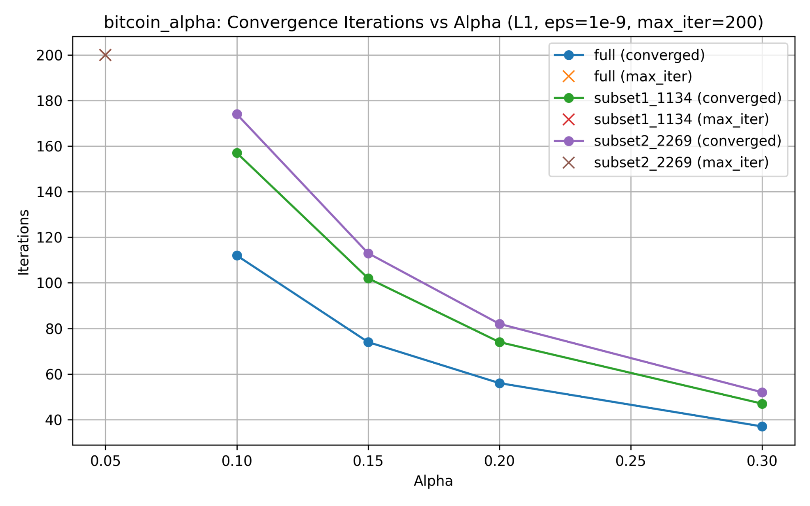
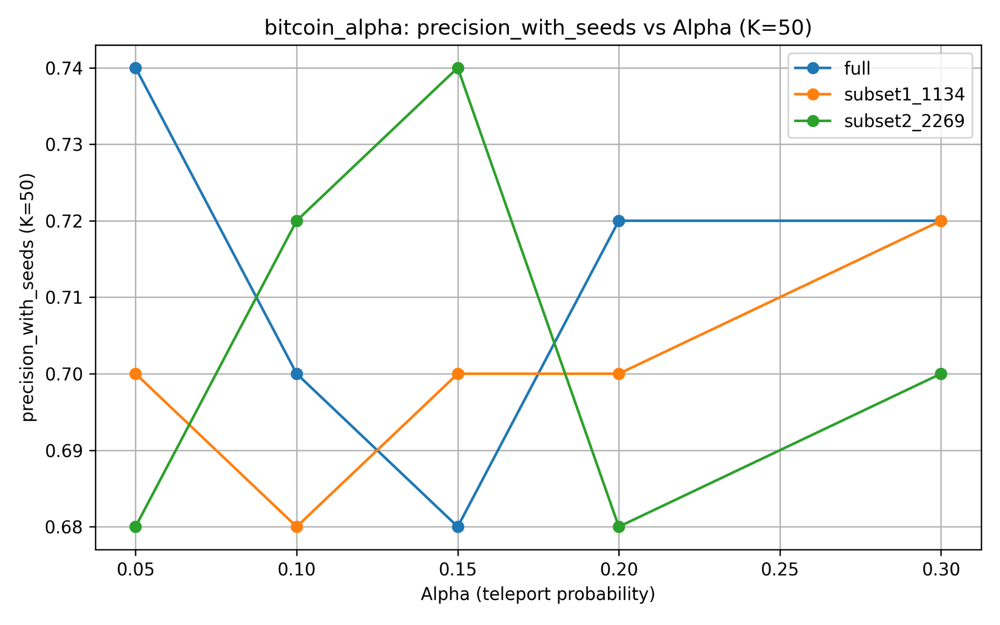
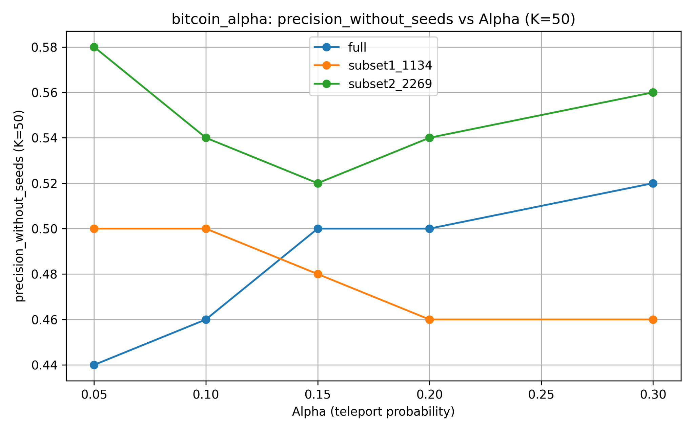

GRAPH ALGORITHMS · C++
Fraud Detection with PPR
Personalized PageRank for scalable ranking-based fraud detection in transaction networks.

Graph-based fraud detection
A performance-oriented C++17 implementation of Personalized PageRank using power iteration, deterministic seed selection, convergence monitoring, Precision@K evaluation, and structured experiments across datasets and alpha values.
Graph Input
Seed Selection
Power Iteration
Convergence
Ranking
Precision@K
Parameter Sweep
Analysis
Parameter sensitivity

